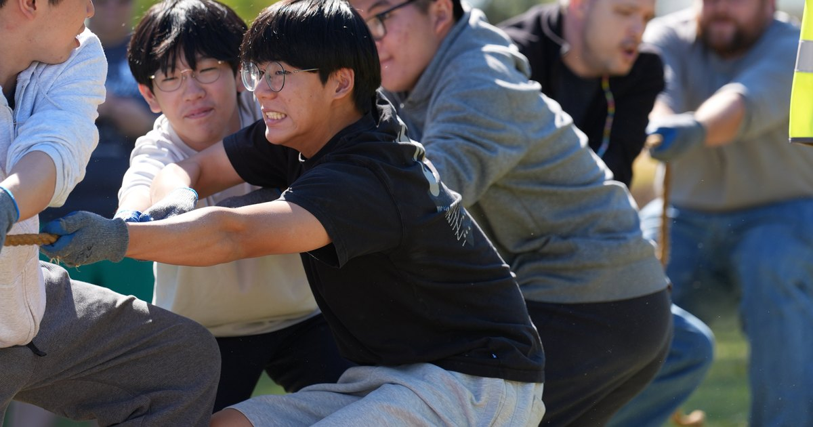
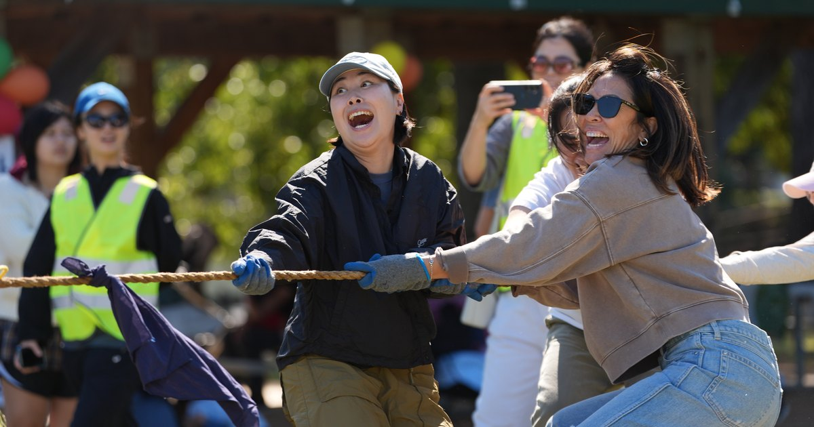
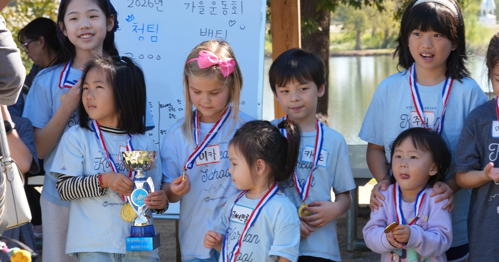

On Saturday, October 24, the North Alabama Korean School held its 2026 fall field day at Brahan Spring Park in Huntsville. The day began at 10 in the morning, as students, teachers and parents gathered on the grass in front of Pavilion #1.
The fall field day is the annual occasion when Saturday lessons pause and the whole school gathers in one place. Students run together across grades and classes, and spend the day on the same side as classmates they rarely meet in the classroom.
A Blue Team and a White Team, with the classes mixed
Students were divided into a Blue Team and a White Team. Rather than setting class against class, every class was split in half and mixed, so that students of different grades met and competed on the same team. Siblings were kept together, and the score from every event was recorded on a single board set up at the edge of the field.
From passing the ball overhead to the tug of war
The morning opened with a welcome and a stretch everyone did together. Students warmed up by passing a ball overhead down the line, and the two teams met for the first time in the relay race.
Students then moved through the events in turn. In the three-legged race, two students held on to each other and matched their steps toward the finish line; in the balloon-popping relay, each runner set off, popped a balloon and ran back. A student quick on their own had, running as a pair, to fit their stride to someone else's.
The loudest cheering of the day came at the tug of war. After the students had taken their turns, parents picked up the rope as well, and with older students and parents pulling together the shouting from both ends of the line did not let up.


A day the Parents' Association and the teachers built together
This year's field day was organised and run by the Parents' Association. Every teacher was there, running the events alongside student helpers, while volunteers in safety vests worked the edge of the field, calling the order of play and looking after the students.

Fifty points between them
Around noon the final score stood on the board at 2,000 for the Blue Team and 1,950 for the White Team — fifty points between them, and the win to Blue. Medals and a trophy were presented at the awards ceremony, and the day closed with the whole school gathered in front of the pavilion for a group photograph.

The field day is the longest stretch of the year that the whole school spends together outside the classroom. Students who are not in the same class, and so rarely have occasion to talk, spent this morning tied to one team and running on the same side. We hope the enjoyment they shared on the field carries on naturally into the Saturdays ahead.
The North Alabama Korean School will go on creating occasions where students learn Korean language and Korean culture not only inside the classroom, but running and laughing together.
Photographs by Gabriel Lockwood.